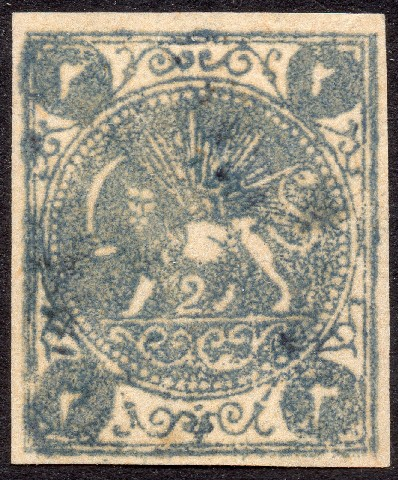
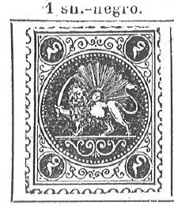
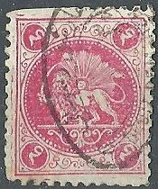
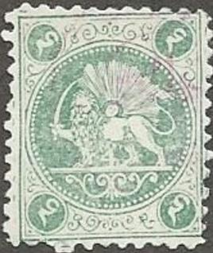
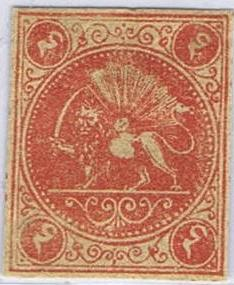
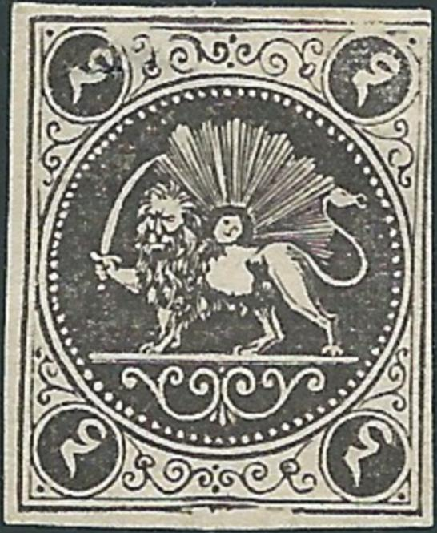
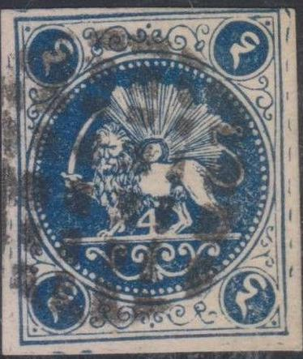
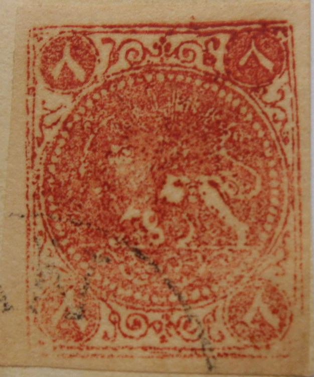
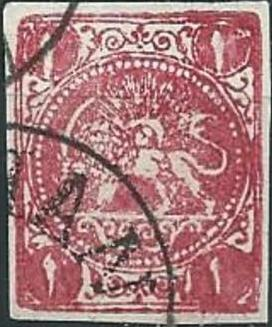

Return To Catalogue -
Persia 1868 issue, Boital reprints -
Persia 1868 issue, forgeries, part 1 -
Persia 1868 issue, forgeries, part 2 -
Persia (Iran) 1868 issue
Note: on my website many of the
pictures can not be seen! They are of course present in the
catalogue;
contact me if you want to purchase the catalogue.
More information about stamps from Persia, forgeries etc. can be found on: http://www.persi.com/fakes/fakes/fake.html, http://fuchs-online.com/iran/lions-03.htm or http://www.iranphilatelic.org/scams.htm. Also the book of Friedrich Schuller 'Die Persische Post und de Postwerthzeichen von Persien und Buchara' has much information.
Persia 1868 issue, forgeries, part 2

Forgery with the two dots missing which should have been in the
upper central part (where the two curly ornaments meet).
Other forgeries, examples:


Forgeries, all made by the same forger?

Same forgeries pasted on a piece of a letter.


Perforated forgery with 'Gift of Pollitz' handwritten on the
back. Next to it an imperforate forgery apparently made by the
same forger in green and a 4 ch red forgery. Also a black 1 ch of
the same forger. Note, that the end of the tail is relatively
large.








Two stamps in a very different design, probably forgeries.
The forger Sperati made deceptive forgeries of the 2 c green(?) and 2 c blue(?) values. The distinguishing characteristics can be found in the BPA book. For example, there is a white space in the inner frameline next to the upper right Arabic '2'.

Sperati forgery.
Sperati also made a forgery of an unissued 2 ch black stamp.



Mystery stamps, 8 ch red (never issued in this color, only in
green!). I think the 8 ch green forgeries were made by the same
forger, note the curly ornament on the left upper side, which is
totally different from a genuine stamp.

Very blur unlisted 8 ch black, perhaps a cut from a stamp album?

This 4 K yellow forgery has much less pearls in the circle than a
genuine stamp.


In my view in this forgery type of the 5 K, the upper right
Arabic '5' is placed too low.
Other dubious items:

Very blurry dubious 1 ch lilac (red?) stamps.
The book 'Lions of Iran' by Mr. Mehrdad Sadri seems to be quite useful in determining forgeries of these stamps. This book also gives descriptions of essays etc. (I have not read this book myself).


{kind=link}
{kind=link}
{kind=link}
{kind=link}
{kind=link}